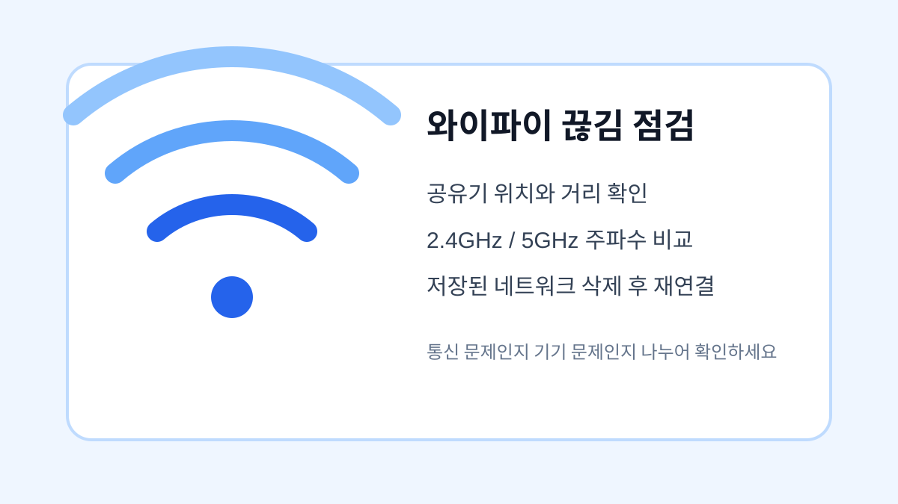

와이파이가 자주 끊길 때 먼저 확인할 것들
공유기를 바꾸기 전에 거리, 주파수, 자동 전환, 저장된 네트워크를 순서대로 점검하는 방법입니다.

와이파이가 자주 끊기면 통신사 문제라고 생각하기 쉽지만 실제로는 스마트폰 설정이나 공유기 위치 때문에 생기는 경우가 많습니다. 같은 집에서도 방 위치, 벽 두께, 전자제품 간섭에 따라 신호가 달라집니다. 먼저 증상이 특정 장소에서만 나타나는지, 특정 앱에서만 느린지 구분하면 원인을 좁히기 쉽습니다.
공유기와의 거리 확인하기
공유기와 너무 멀거나 벽을 여러 개 지나면 속도가 떨어지고 연결이 끊길 수 있습니다. 가능하면 공유기를 바닥보다 높은 곳에 두고, 전자레인지나 무선 기기 옆은 피합니다. 집 안에서 특정 방만 끊긴다면 공유기 위치를 바꾸는 것만으로도 개선될 수 있습니다.
2.4GHz와 5GHz 구분하기
5GHz는 속도가 빠르지만 벽을 통과하는 힘이 약하고, 2.4GHz는 속도는 낮아도 멀리 갑니다. 가까운 방에서는 5GHz, 먼 방에서는 2.4GHz를 선택하는 것이 유리합니다. 이름이 비슷한 와이파이가 두 개 보인다면 어떤 주파수인지 확인해보세요.
| 항목 | 장점 | 맞는 상황 |
|---|---|---|
| 2.4GHz | 거리 유리 | 방이 멀 때 |
| 5GHz | 속도 유리 | 공유기 근처 |
| 네트워크 재설정 | 오류 초기화 | 계속 끊길 때 |
설정을 바꾸기 전 마지막 확인
- 특정 장소에서만 끊기는지 확인하기
- 공유기 위치와 주변 전자제품 확인하기
- 2.4GHz와 5GHz를 상황에 맞게 선택하기
- 저장된 와이파이를 삭제 후 다시 연결하기
- 문제가 계속되면 공유기 재부팅과 통신사 점검 요청하기
와이파이 문제는 한 번에 해결되지 않을 수 있습니다. 하지만 장소, 주파수, 기기 설정을 차례로 확인하면 공유기를 바꾸기 전에 할 수 있는 조치를 대부분 끝낼 수 있습니다.
와이파이 끊김에서 먼저 나눌 원인
와이파이가 끊길 때는 공유기 문제인지, 특정 스마트폰 문제인지, 특정 위치 문제인지 먼저 나누어야 합니다. 같은 장소에서 다른 기기도 끊기는지 비교하면 확인 시간이 줄어듭니다.
재연결 전 확인할 설정
저장된 네트워크를 삭제하기 전 비밀번호를 알고 있는지 확인하세요. 2.4GHz와 5GHz 이름이 따로 있다면 거리와 속도에 따라 어느 쪽이 안정적인지도 비교하는 것이 좋습니다.
와이파이 연결 관련 공식 확인처
확인 기준: 2026.06.27 · 작성/검토: SY Guide 편집팀 · 정정 문의: issuebara@gmail.com